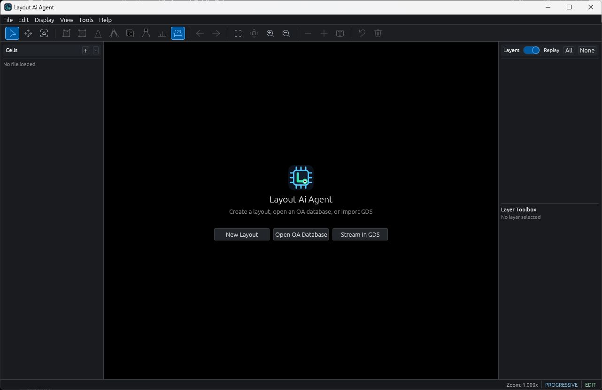
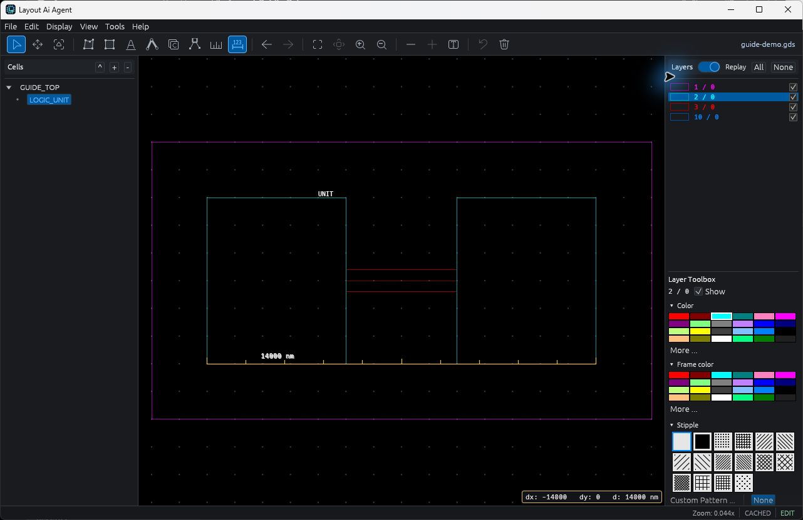

Explore cell hierarchy
Pan and zoom through the layout, navigate cells, and inspect instance placements without losing the bigger picture.
A GDSII viewer and basic editor for Windows. Explore cell hierarchy, inspect layers, measure geometry, and work through your next edit.
From the whole layout to individual objects, keep the geometry and its structure in view.
Proprietary trial software by SynerRaise. Not a signoff tool.

Use a focused desktop workspace for GDSII viewing, navigation, and basic layout editing.
Pan and zoom through the layout, navigate cells, and inspect instance placements without losing the bigger picture.
Control layer visibility and appearance. Use object search, Properties, and rulers to investigate layout details.
Work with basic geometry and instances, undo changes, save a native project, and export GDSII for independent review.
The illustrated user guide walks through files, selection, hierarchy, layers, editing tools, measurement, and save recovery.
Read the illustrated guide →
Version 0.1.0 · Windows x86-64 · Early Access trial
The installer is unsigned and Windows SmartScreen may display a warning. Compare the download’s SHA-256 checksum with the published checksum before installing. This release installs for the current Windows user. macOS and Linux downloads are not offered here.
This Early Access trial is not a DRC, LVS, extraction, or tape-out signoff tool. Keep original layouts unchanged, save working edits separately, and reopen exported GDS files in an established tool for independent inspection. Use qualified verification before fabrication.
The native OA-like project format is specific to this application; it does not provide Cadence OpenAccess interoperability.